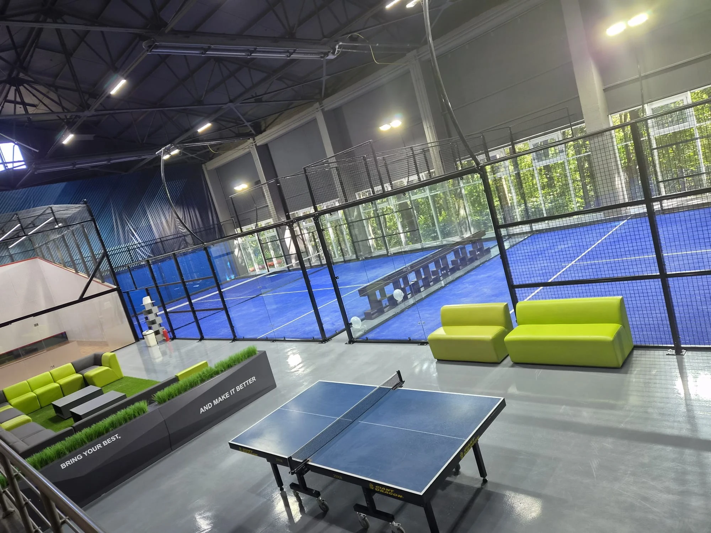

What Makes a Padel Club “Luxury”?
Lists of the best padel clubs in the world usually feature famous resorts and city clubs. For an investor, the more useful question is which design decisions created that premium experience, and which of them can be repeated on your own site and budget.
Across premium projects, five decisions come up again and again:
- Open sightlines. Panoramic or Super Panoramic (full panoramic) courts make play visible from the lounge, café and walkways.
- Light quality. Even, glare-free LED lighting matters more to players than decorative fittings.
- Climate control. A roof, indoor hall or high-specification corrosion protection protects booking hours and the guest experience.
- Social gravity. A lounge, café or terrace placed where guests can watch play keeps people on site longer.
- Setting. Landscape, waterfront, rooftop or architectural integration turns a court into a destination.
Spend first on what players feel during every booking — court quality, light, shelter and sightlines. Add lifestyle features only where the target market will pay for them.
8 Premium Padel Club and Resort Projects Worth Studying
1. Meyyafushi, Maldives — an overwater padel court
A Classic padel court installed on an offshore platform, completed in 2025. High salinity, persistent humidity, sea-breeze exposure and offshore transport shaped the structure and installation plan. Lesson: in a dramatic setting the location does the marketing, but steel protection and maintenance planning decide whether the court still looks premium after several seasons. View the Maldives project.
2. The Circles Club, Yogyakarta, Indonesia — indoor lifestyle club
Four Super Panoramic courts combined with a restaurant and health bar, wellness functions and social space. Court height, lighting and the high-ceiling steel structure were planned together for safe play and a clean visual result. Lesson: when the club sells a lifestyle, the court system must match the brand, not just the rules. View the Yogyakarta project.
3. Padelhub, Moscow, Russia — large indoor commercial club
Seven indoor courts in a high-span venue with a mixed portfolio: three Super Panoramic, two Panoramic and two Single courts on 10 mm professional red turf. Lesson: mixing court types lets a premium club put showcase courts where spectators gather while keeping overall capital cost under control. View the Moscow project.
4. Esperanza Racket Club, Las Terrenas, Dominican Republic — residential resort
Two Panoramic courts with royal blue turf and black steel frames inside Esperanza Residence, alongside three clay tennis courts, training programmes and social facilities. Lesson: a small court cluster can add guest activity and social value without dominating a tropical landscape. View the Dominican Republic project.
5. Till's Beach Resort, Gomoa Fetteh, Ghana — seaside hotel
A two-court seaside hospitality project exposed to sea breeze, strong UV and moisture, installed by the local team with SPORTENVO technical guidance. Lesson: beachfront courts sell the view, so corrosion protection and coating quality are part of the luxury specification. View the Ghana project.
6. PADEL.CNX, Chiang Mai, Thailand — covered tropical club
Four Panoramic courts with black artificial turf, straight-arm LED lighting and a large steel roof for heavy rain, intense sun and high humidity. Lesson: in tropical markets a well-planned roof is what makes year-round premium pricing possible. View the Chiang Mai project.
7. Rooftop club, Kuala Lumpur, Malaysia — urban rooftop venue
A commercial padel court system supplied with technical drawings and installation guidance for a rooftop club. Access, structural loads, drainage and the interface with the existing building all had to be resolved before installation. Lesson: skyline views create a premium city experience, but only when the building engineering is checked first. View the Kuala Lumpur project.
8. Indoor hall venue, Moldova — courts plus lounge
Multiple courts integrated into an existing industrial hall with high clear height, large side windows and an active truss roof, plus spectator circulation and a dedicated lounge beside the courts. Lesson: converting an existing building can deliver a premium atmosphere at a lower cost than a new build, provided the clear height and circulation work. View the Moldova project.
Luxury Padel Club Features: Court, Climate and Hospitality
| Feature | Why it feels premium | Planning note |
|---|---|---|
| Super Panoramic (full panoramic) showcase court | Maximum open view for spectators, events and photography | Often used for one or two feature courts rather than the whole club |
| Panoramic (half panoramic) courts | Strong visibility at a practical cost per court | Common choice for most premium commercial courts |
| Glare-free LED lighting | Better play and better photos at night | Review mounting height and position with the roof or hall structure |
| Roof or indoor hall | Reliable bookings in rain, heat or cold | Check clear height, wind exposure and foundation loads |
| Coloured turf and frame finish | Brand identity and visual consistency | Choose colours early so turf and coating can be ordered together |
| Lounge or café with court views | Longer stays and secondary revenue | Place it where it overlooks the showcase court |
| Marine-grade corrosion protection | Keeps waterfront courts looking new | Essential for beach, island and overwater sites |
How to Plan a Luxury Padel Club on a Realistic Budget
- Define the guest: resort guests, private members or a premium city audience.
- Choose one or two showcase courts and specify the rest for durability and cost.
- Solve climate first: roof, indoor hall or corrosion specification.
- Place the lounge, café or terrace where it overlooks play.
- Agree lighting, turf colour and frame finish as one visual package.
- Check foundations, drainage and structural interfaces before ordering courts.
- Test pricing and amenity costs in a profitability model before committing.
For budgets, start with the padel court construction cost calculator. For facilities and layout, see the padel club amenities guide and the padel club design checklist. For resort-specific planning, see padel courts for hotels and resorts.
Luxury Padel Club FAQ
What makes a padel club luxury?
A luxury padel club combines open-view courts, glare-free lighting, reliable weather protection and social spaces that overlook play, set in a distinctive location or building. Premium finishes help, but players judge the club first by court quality, light and comfort during every booking.
Which padel court type do luxury clubs use?
Many premium clubs use Super Panoramic (full panoramic) courts for showcase or event courts and Panoramic (half panoramic) courts for the remaining courts. This keeps the open-view experience where spectators gather while controlling the overall budget.
Do luxury padel clubs need a roof?
Not always, but in rainy, very hot or tropical climates a roof or indoor hall protects booking hours and the guest experience. Clubs in mild, dry climates may operate premium outdoor courts with good lighting and landscaping instead.
Can a hotel or resort add a premium padel court?
Yes. Many resorts start with one or two courts placed within the landscape or near the beach. Coastal and island sites need stronger corrosion protection and a clear maintenance plan, and the court should be reviewed together with the foundation and local logistics.
How much does a luxury padel court cost?
SPORTENVO Panoramic courts start from about USD 9,500 EXW and Super Panoramic courts from about USD 10,000 EXW per court. Roofs, foundations, shipping, installation, lighting upgrades and hospitality spaces are additional and depend on the site.
Related SPORTENVO Guides
- Padel Club Amenities: What Players Actually Want
- Padel Club Design Checklist
- Panoramic vs Super Panoramic Padel Court
- Padel Courts for Hotels & Resorts
- All Project References
Planning a premium club or resort court?
Share the country, site type, target court count and the guest experience you want to create. SPORTENVO can help structure the court mix, roof, foundation and site-interface questions before equipment is ordered.
Start Your Project ↗